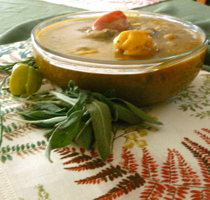

Soup Joumou

Soup Joumou
The Soup Joumou comes from the Haitian Culture,its history dates back over 200 years ago
after Haiti successfully revolted against slavery and proclaimed its independence.
It represents hope and freedom for Haiti.
Ingredients
- 1 lb of beef
- 1/2 cup of olive oil
- water as needed
- 1 large scallions, diced
- 1 half medium cabbage, diced
- 2 potatoes, peeled and chopped
- 2 yams, peeled and chopped
- 2 malangas, peeled and chopped
- 2 butternut squash, peeled and chopped
- 2 turnips, peeled and chopped
- 1 stalk of celery chopped
- 3 medium carrots, chopped
- 1 6 oz. package of spaghetti
- 1 tablespoon of tomato paste
- 1 scotch bonnet pepper
- 4 parsley sprigs
Steps
- Marinate the meat overnight or for at least 1 hour.
- Place the seasoned meat in a stockpot and cover with water
- Add oil and let boil over high heat. Keep covered until the water has evaporated.
- Uncover, stir and simmer a few drips of water occasionally to brown the meat.
- Keep stirring and simmer water occasionally until you have a nice browning color to the meat.
- Stir in one tbsp of tomato paste. Remove meat and set aside the pot for the vegetables.
- In a separate bowl, cut into small pieces the large scallions and half medium cabbage.
- Peel & chop the potatoes, yams, malanga, butternut squash, carrots, and turnip.
- Wash the vegetables. In a separate pot, boil water and add the vegetables. Cover and cook over high heat for about an
hour.
- Reduce heat and add scotch bonnet pepper.
- Once the squash is fully cooked, remove it from the pot. Use some of the cooking water to blend the squash into a purée.
- Strain the purée through a fine sieve set over a bowl. Press it through with a spoon or rubber spatula.
- For best flavoring, pour the cooked vegetables, the squash purée and cooking liquid into the pot that cooked the meat.
- Add parsley, thyme, and broken spaghetti (or substitute with macaroni).
- Let it all cook, until tender.
- Combine meat into soup. Serve hot.
Back to top